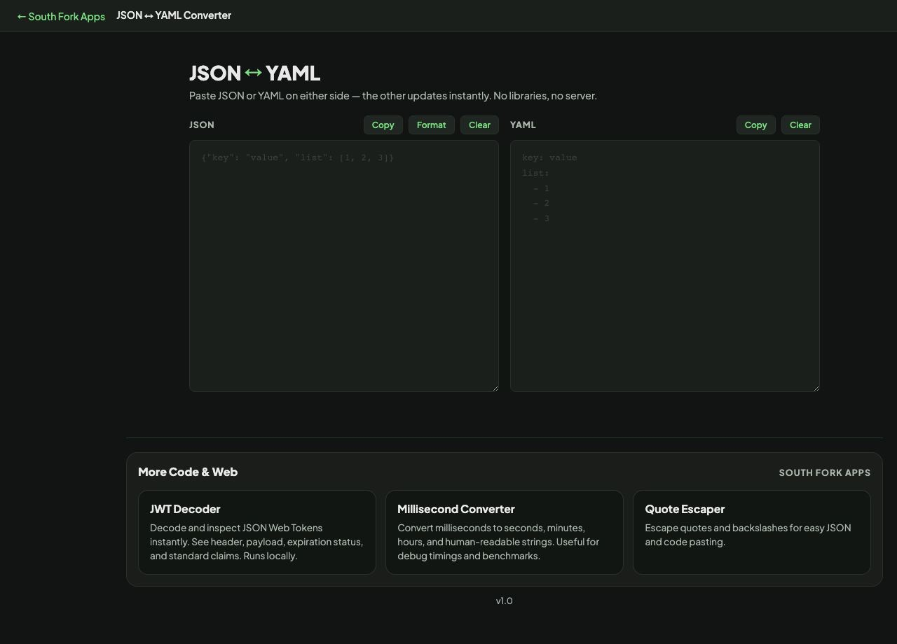

JSON to YAML Converter
Paste JSON or YAML on either side — the other updates instantly. No libraries, no server.
JSON
YAML
Paste JSON or YAML on either side — the other updates instantly. No libraries, no server.
JSON to YAML Converter translates in both directions, with formatting on either side. YAML is a superset of JSON, so anything valid as JSON converts cleanly, and the interesting direction is the other one.
YAML uses indentation for structure, which makes it pleasant to read and unforgiving to edit. Tabs are not permitted for indentation at all, and a single misaligned space changes which parent a key belongs to without producing an error.
The other trap is type inference. YAML 1.1 interprets a surprising set of unquoted words as booleans, which is how the country code NO becomes false and a version number like 1.10 becomes a float that loses its trailing zero. YAML 1.2 narrowed this, but many parsers still follow the older behaviour, so quote anything that could be misread.

v1.0